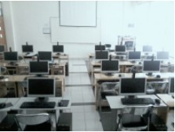

Ketersediaan dan kelengkapan prasarana pada Departemen Matematika FMIPA Unpad sudah cukup lengkap. Seluruh kebutuhan prasarana penunjang kegiatan akademik dan non-akademik sudah memadai untuk digunakan oleh seluruh civitas akademika Departemen Matematika FMIPA Unpad. Jenis prasarana yang ada dan dikelola oleh Departemen adalah:
Laboratorium: Dapat digunakan oleh mahasiswa untuk melakukan praktik pembuatan akta, penelitian, pengerjaan tugas dari dosen, dan lain-lain.
Ruang kerja mahasiswa: berupa ruangan berukuran 50 m2 digunakan oleh mahasiswa untuk melakukan aktivitas organisasi kemahasiswaan, dan lain-lain.
Ruang seminar: digunakan oleh mahasiswa untuk melakukan diskusi, seminar, dan lain-lain.
Perpustakaan: digunakan oleh mahasiswa untuk melakukan penelusuran literatur, penelitian, pengerjaan tugas dari dosen, membaca, dan lain-lain.
Common room: digunakan oleh mahasiswa untuk berdiskusi, pengerjaan tugas dari dosen, dan lain-lain
Untuk menunjang kegiatan perkuliahan maupun ekstra kurikuler mahasiswa, Departemen Matematika FMIPA Unpad menyediakan berbagai prasarana sebagai berikut:
Departemen Matematika FMIPA Unpad juga menyediakan fasilitas komputer yang dapat dipinjam atau dipakai oleh mahasiswa (laboratorium komputer).